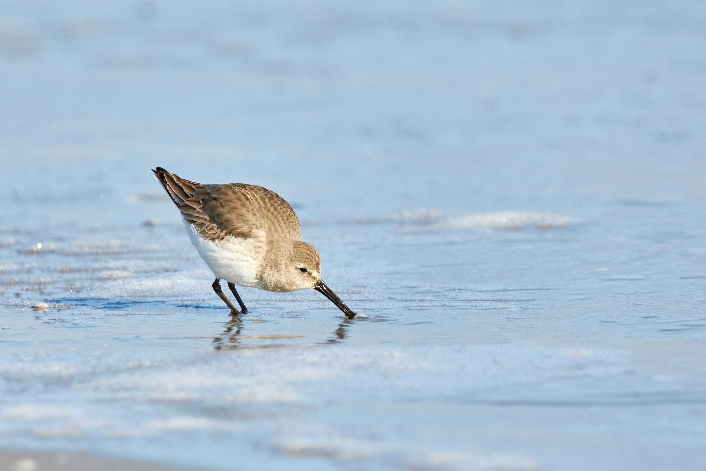

The Common Sandpiper is a small wader with brown upperparts, white underparts, and a characteristic habit of bobbing its tail and rear body while walking. It is usually found along the edges of water, where it runs quickly over mud, sand, and stones while searching for small invertebrates. Many individuals seen in India are winter visitors from northern breeding grounds.